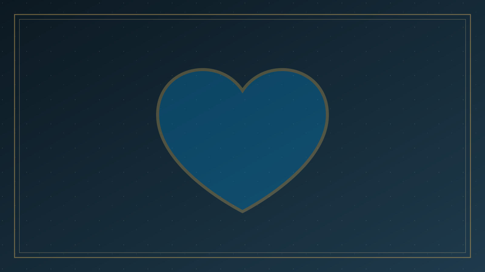
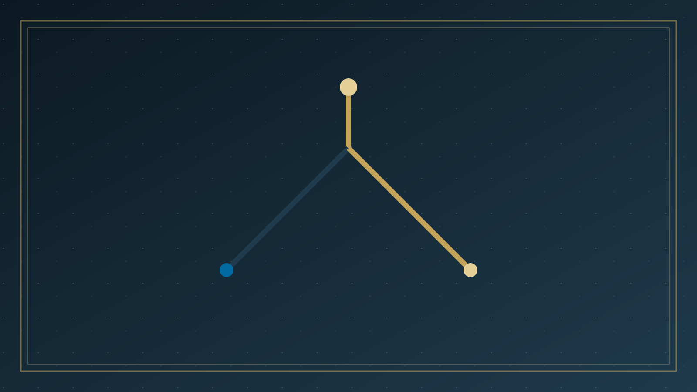

專論總覽
四個屬靈定律 | Four Spiritual Laws body { font-family: 'Inter', system-ui, -apple-system, sans…
本篇已按原有標題拆成可獨立閱讀的分題。請選一題進入；正文未經改寫，只把長頁分開。

01
第一律：神的愛
一 神愛你，並且為你的生命有一奇妙的計劃 神的愛 約翰福音 3:16 「神愛世人，甚至將祂的獨生子（耶穌）賜給他們，叫一切信祂的，不致滅亡，反得永生。

02
第二律：罪的隔絕
二 人因有罪而與神隔絕，所以不能知道並經驗神的愛和神為他生命的計劃 人因有罪 羅馬書 3:23 「因為世人都犯了罪，虧缺了神的榮耀。

03
第三律：唯一救法
三 耶穌基督是神為人的罪所預備的唯一救法，藉著祂你可以知道並經驗神的愛和神為你生命的計劃 耶穌為我們死 羅馬書 5:8 「唯有基督在我們還作罪人的時候為我們死，神的愛就在此向我…

04
第四律：必須接受
四 我們必須親自接受耶穌基督作救主和生命的主，這樣我們才能知道並經驗神的愛和神為我們生命的計劃 我們必須接受基督 約翰福音 1:12 「凡接待祂的，就是信祂名的人，祂就賜他們權…

05
接受之後
現在您已經接受了基督… 怎樣知道基督已在你的生命中 你有沒有請基督進入你的生命？

06
還有什麼呢
還有什麼呢？